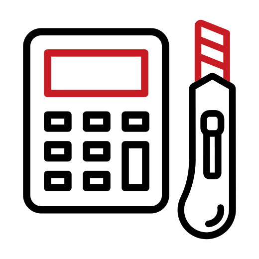

A la lata,
al latero...
¿Me creés si te digo que con una lata podés sacar fotos? ¡Sí! Con una lata o una simple caja podés crear tu propia cámara estenopeica, sin la necesidad de usar lentes u objetivos. La luz entra a través de un pequeño agujero llamado estenopo y a partir de unos simples cálculos se determina el tiempo de exposición correcto para sacar una buena fotografía. ¡Y eso es lo que enseñamos nosotros!

¿Quiénes somos?
Alalata es una taller de fotografía estenopeica experimental que nace en 2011 en la ciudad de Santa Fe, Argentina. Está dirigido por Cecilia De Paula y co-dirigido por Marta Yardín.
(Haz click en las imágenes para verlas positivadas)
(Desliza el cursor sobre las imágenes para verlas positivadas)

¿Qué hacemos?
En Alalata te enseñamos a construir tu propia cámara fotográfica, a sacar fotos y a revelarlas en el cuarto oscuro.
- No hay requisitos para la participación en el taller.
- No se requieren conocimientos previos sobre fotografía.
- Todos los materiales están incluidos.
- Se entrega certificado.

¿Qué vamos a enseñarte?
Este taller está orientado a todas aquellas personas que quieran aprender a construir su propia cámara fotográfica y experimentar con ella mediante la técnica de la fotografía estenopeica. Construiremos nuestra propia cámara y sacaremos fotos con ella utilizando papel fotosensible que luego revelaremos en el cuarto oscuro. Con nosotros aprenderas:
-
Fundamentos teóricos
Conceptos teóricos sobre la formación de la imagen. ¿Qué es la fotografía estenopeica? ¿Cómo se forma la imagen adentro de la cámara? Conceptos que intervienen en la captura de la imagen. Las singularidades de la fotografía estenopeica.
-

Construcción de la cámara
Conceptos teóricos y prácticos para la construcción de la cámara estenopeica. Cálculos que intervienen en la construcción y uso de la cámara. Construcción de la cámara en el taller.
-

Uso de la cámara
Salidas fotográficas. Tiempos de exposición según condiciones climáticas. Encuadres.
-

Revelado
Conceptos teóricos y prácticos para el revelado analógico de papel fotosensible. Preparación de los químicos y revelado manual en el cuarto oscuro.
-
Positivado
Positivado analógico y digital. Positivado por contacto. Positivado digital con Photoshop.
Trabajos de alumnos que pasaron por Alalata
(Recuerda hacer click en las imágenes para verlas positivadas)
(Recuerda deslizar el cursor sobre las imágenes para verlas positivadas)

María Belén Frutos

Claudio Mangini
Liliana Mesquida
María Maciel

Pilmayquen Paserini
Sonia Maciel

Lorena Nittoli
Evange Chiaraviglio
Claudio Mangini
Contacto
alalatafotografia@gmail.com
Teléfono
+54 9 342 541-5312
Ubicación
Santa Fe Capital, Prov. de Santa Fe, Argentina